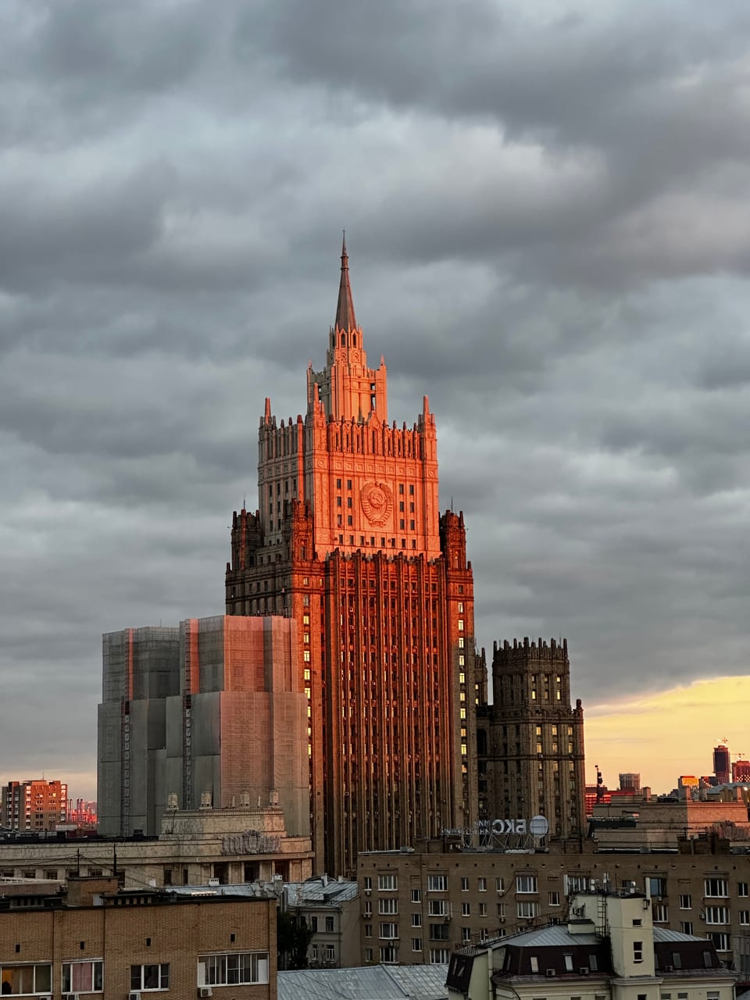

Статьи ·
Сталинские высотки: как увидеть их с крыш, а не с земли
Коротко об истории «семи сестёр» и о том, с каких крыш каталога видны МИД, гостиница «Украина» и Котельническая, где высотка встаёт в один кадр с Сити и когда подниматься.
Сталинские высотки Москвы обычно разглядывают снизу: приходится задирать голову, верхние ярусы сжимаются в перспективе, а соседние дома закрывают половину силуэта. С крыши всё наоборот: между вами и зданием появляется дистанция, а в кадр попадает город вокруг. Коротко вспоминаем историю «семи сестёр» и разбираем, с каких площадок каталога на какую высотку смотреть.
«Семь сестёр»: короткая история
В 1947 году, к 800-летию Москвы, в городе заложили восемь высотных зданий. Построили семь — в конце 1940-х и в 1950-е годы, а восьмое, в Зарядье, так и не появилось.
Прозвище «семь сестёр» понятно с первого взгляда: у зданий явное семейное сходство — ступенчатые ярусы, торжественные фасады, шпили наверху. Назначение при этом у всех разное:
- главное здание МГУ на Воробьёвых горах;
- здание МИД на Смоленской площади;
- гостиница «Украина»;
- гостиница «Ленинградская»;
- жилой дом на Котельнической набережной;
- жилой дом на Кудринской площади;
- здание у Красных Ворот.
С тех пор над Москвой выросли башни Сити, но «сёстры» так и остались одними из главных символов города.
Почему на высотку лучше смотреть сверху
Снизу такое здание трудно даже сфотографировать: камеру наклоняешь назад, вертикали заваливаются, и башня на снимке будто падает. Высотка — это прежде всего силуэт, а силуэт читается на расстоянии. Вот что даёт взгляд с крыши:
- Цельная фигура. Издалека ярусы, башня и шпиль собираются в одну форму, а не дробятся на куски между соседними домами.
- Масштаб. На фоне жилых кварталов видно, насколько «сестра» поднимается над городом. Внизу это теряется: всё выше пятого этажа сливается в одно «очень высоко».
- Контекст. В кадр попадает то, что делает здание московским: река, старые крыши, Кремль или башни Сити. Получается уже не портрет фасада, а вид на сталинскую высотку в её настоящем окружении.
- Небо. Наверху его не заслоняют деревья и провода, и на закате здание чётко встаёт на цветном фоне.
Какую высотку с какой крыши видно
Ниже — четыре сюжета и площадки, с которых они открываются. Опираемся только на наши кадры с этих точек.
Котельническая: с Кремлём, на закате, через реку
- Таганская — с Кремлём и рекой. Высотка видна справа в широкой панораме центра, левее в дымке угадываются башни Кремля, внизу течёт Москва-река. Вечером включается подсветка, и здание перетягивает на себя внимание.
- Марксистская — закатный портрет. С крыши у метро Марксистская высотка стоит точно по центру и целиком помещается в кадр, от ярусов до шпиля, а за ней открывается небо — главный фон этой точки. Приходить лучше к вечеру: улица внизу в сумерках превращается в две полосы огней.
- Новокузнецкая — через реку. Между вами и высоткой лежит вода: на переднем плане река и теплоходы, а вечером в ней отражается подсвеченный фасад.
МИД: на горизонте и по соседству
С крыши у метро Курская здание МИД видно на горизонте левее Кремля. Это дальний план: в вечерней дымке ступенчатый силуэт со шпилем похож на гравюру, а скаты и мансарды старых кварталов внизу добавляют кадру глубины.
Крыша у метро Смоленская — неподалёку от этой высотки: здание хорошо видно над соседними домами. Крупный план — ярусы, герб на башне, шпиль — получится только с зумом телефона. На закате фасад отливает медным светом.
Гостиница «Украина»: целиком или за рекой
Со скатной крыши у метро Киевская «Украина» видна целиком, со шпилем. На закате она темнеет силуэтом на цветном небе, а потом загорается золотая подсветка ярусов. Кровля здесь наклонная, поэтому нужны нескользящая обувь и спокойные движения.
С крыши у метро Смоленская гостиница смотрится иначе: она стоит за Москвой-рекой, а позади поднимаются башни Сити. Закат приходится на эту сторону, и в ясный вечер небо за ними окрашивается в оранжевый.
Высотка и Сити в одном кадре
С крыши у метро Римская сталинская высотка видна на среднем плане, а чуть дальше за ней встают башни Москва-Сити. В золотой час дымка сводит их в общий силуэт, и на снимке рядом оказываются две эпохи московских вертикалей — послевоенная и сегодняшняя.
Если выбирать по сюжету
- Высотка в одной панораме с Кремлём — Таганская с Котельнической или Курская с МИД.
- Две «сестры» за одну прогулку — Смоленская: МИД неподалёку, «Украина» за рекой.
- Здание целиком, со шпилем, без зума — Марксистская или Киевская Скатная.
Когда подниматься
Лучше всего прийти примерно за час до заката. Сначала низкое солнце ложится на фасады и прорисовывает ярусы, потом здания уходят в силуэты, а в сумерках у Котельнической и «Украины» загорается подсветка.
Базовая прогулка длится 1 час и при таком старте заканчивается примерно с закатом. Чтобы дождаться огней, спросите о продлении — 500 ₽ с человека за час, если площадка свободна.
Цвет неба никто не гарантирует, а дальний план вроде МИД с Курской в густую дымку может пропасть: за ним лучше идти в прозрачный вечер.
Как снять высотку на телефон
Штатного фотографа нет: снимаете сами или приходите со своим. Пригодятся три приёма:
- Портретная ориентация. Здание вытянуто вверх и в вертикальный кадр ложится без пустых полей. Оставьте над шпилем полоску неба, чтобы башне было куда расти.
- Телеобъектив. Для крупного плана МИД со Смоленской или дальнего силуэта с Курской включите телемодуль, если он есть: растянутая пальцами картинка превращает ярусы в мыло.
- Сумерки. Пока небо ещё синее, а подсветка уже включилась, в кадре читаются и фон, и здание; в полной темноте фон пропадает.
Как проходит прогулка
Набор площадок меняется, и какие-то из названных крыш могут быть временно недоступны. Текущий список с нашими снимками — в каталоге на главной, там же форма заявки; можно и сразу написать в Telegram-бот. Укажите, какая высотка нужна в кадре, — подскажем точку из тех, что работают сейчас.
Адреса мы не публикуем: заранее вы знаете только, у какого метро крыша, например у метро Римская или у метро Киевская, а точное место встречи сообщаем после подтверждения записи. Сопровождающий встречает вас, поднимается с вами наверх и коротко объясняет правила на площадке — дальше час ваш. Стоимость — от 2000 ₽ за человека. Возьмите тёплый слой: после заката наверху свежо.
Читайте также: «Что видно с крыш Москвы» — какие ориентиры открываются с разных крыш каталога и когда за ними приходить, «Крыши с видом на Кремль» — чем различаются виды на исторический центр с Таганской и Курской, и «Высотка на Котельнической» — чем различаются три ракурса на самую узнаваемую высотку.
FAQ
Частые вопросы о сталинских высотках
Почему сталинских высоток семь, если закладывали восемь?
В 1947 году, к 800-летию Москвы, заложили восемь высотных зданий, но восьмое, в Зарядье, так и не построили. Поэтому «сестёр» семь: МГУ, МИД, две гостиницы, два жилых дома и здание у Красных Ворот.
Можно ли увидеть две сталинские высотки за одну прогулку?
Да, например с крыши у метро Смоленская: высотка МИД стоит неподалёку, а гостиница «Украина» видна за Москвой-рекой вместе с башнями Сити. Набор площадок меняется, так что перед записью проверьте в каталоге на главной, доступна ли эта крыша сейчас.
Нужен ли зум, чтобы снять высотку на телефон?
Зависит от крыши. Котельническая с площадки у метро Марксистская и так занимает центр кадра, а со скатной крыши у метро Киевская «Украина» видна целиком. Зум пригодится на Смоленской, чтобы снять МИД крупным планом, и на Курской, где высотка стоит на горизонте.
Над городом